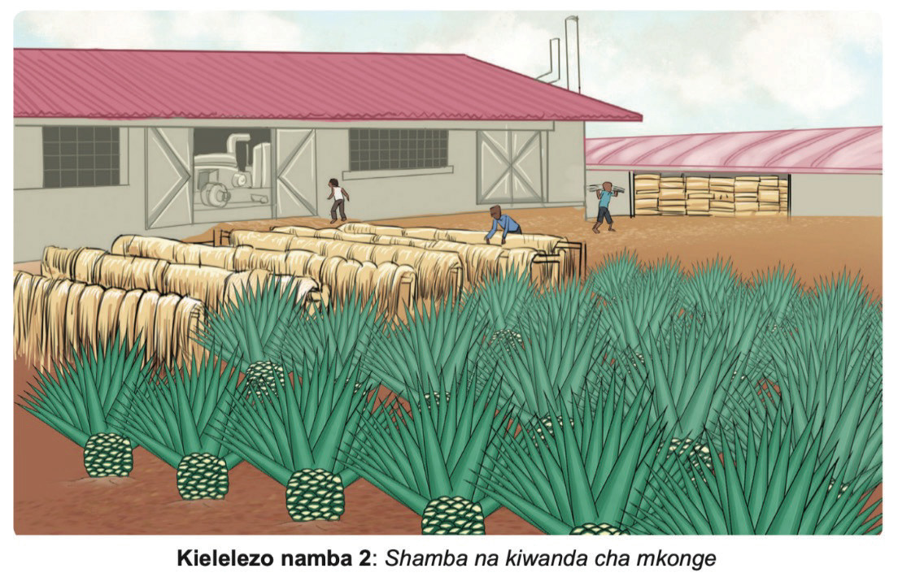

Wakoloni hawakuruhusu maendeleo ya viwanda kufanyika kwenye makoloni kwa kuhofia ushindani na viwanda mama vya Ulaya. Sababu kuu ni kwamba maendeleo ya viwanda kwenye makoloni yangekwenda kinyume na malengo ya uanzishaji wa ukoloni. Wakoloni walilitaji jamii tawaliwa zibaki na jukumu la kuzalisha malighafi tu zilizotakiwa Ulaya na kuwa soko la bidhaa zilizotoka Ulaya.
Uchimbaji wa madini wakati wa ukoloni
Wakoloni walijishughulisha pia na uchimbaji wa madini, ambayo yaliwapatia faida kubwa. Madini yaliyochimbwa na wakoloni ni:
- (a) Almasi katika maeneo ya Mwadui na Kizumbi, Shinyanga na Mabuki, Mwanza;
- (b) Dhahabu katika maeneo ya Mto Lupa-Mbeya, Sekenke-Singida; Buhemba na Nyamongo-Mara na Nyarugusu-Geita;
- (c) Makaa ya mawe na risasi katika maeneo ya Mpanda-Rukwa;
- (d) Madini ya bati katika maeneo ya Morogoro na Karagwe; na
- (e) Chumvi katika maeneo ya Uvinza-Kigoma.
Kielelezo namba 9 kinaonesha aina mbalimbali za madini yaliyochimbwa na wakoloni.
Historia ya Tanzania na Maadili DRS V.indd 24
08/09/2025 10:32